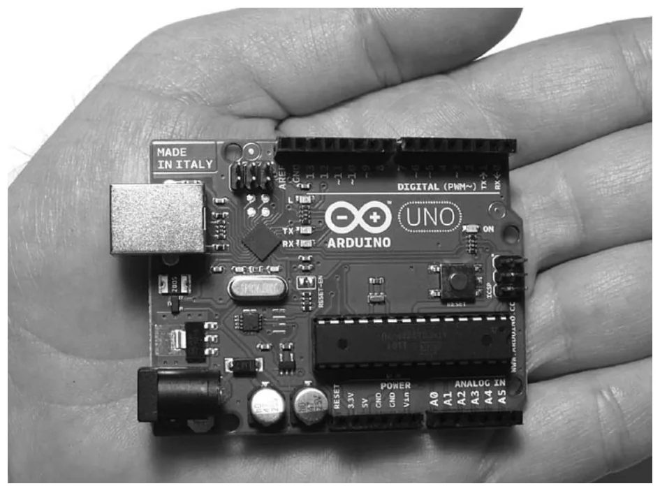
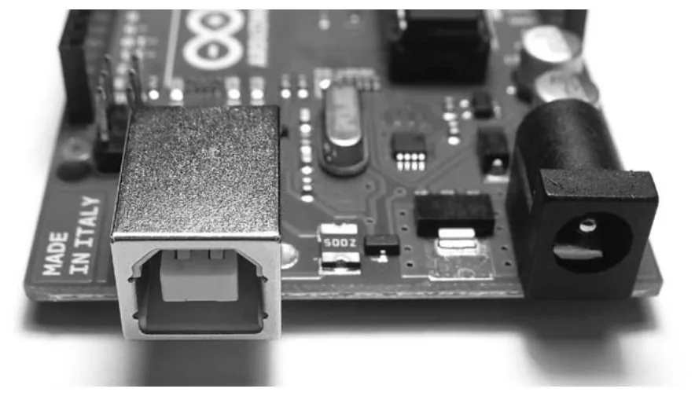
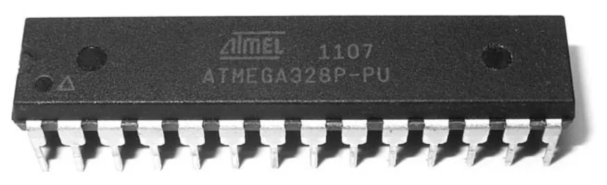
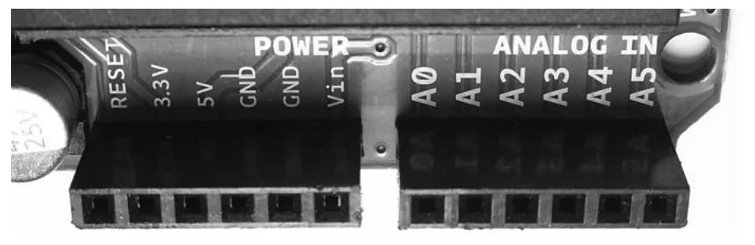
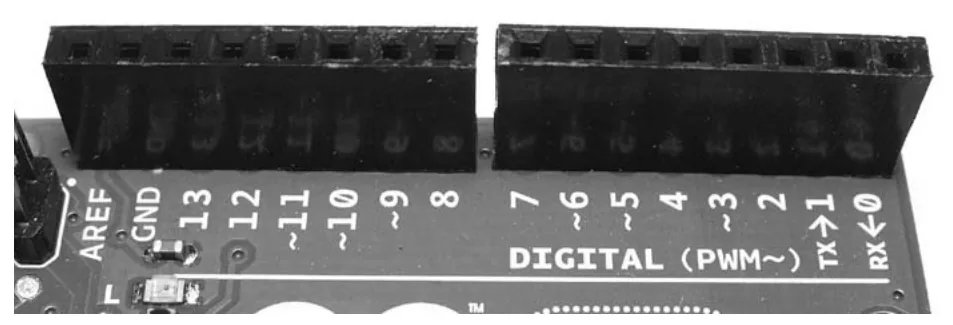
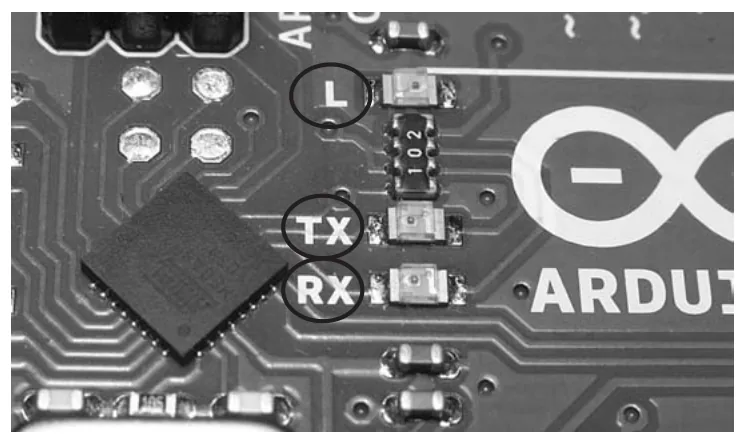
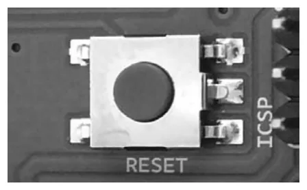
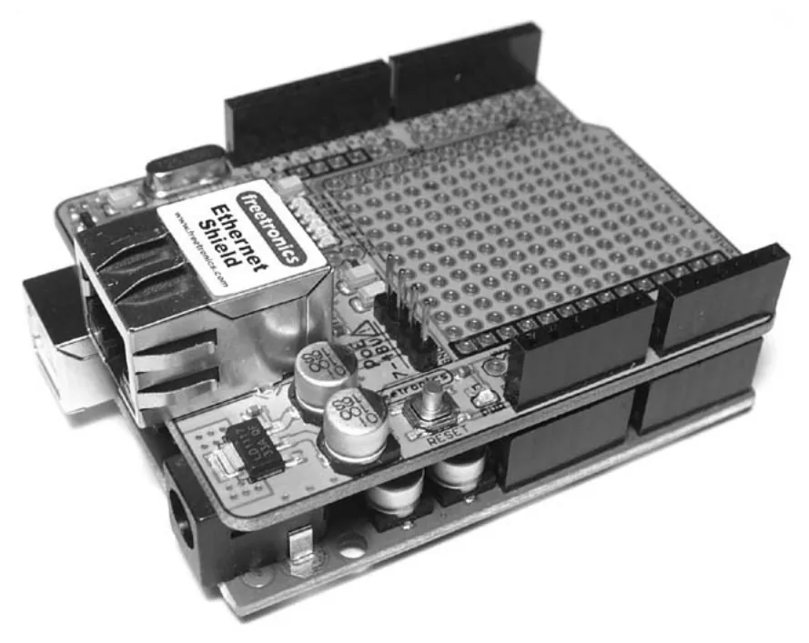
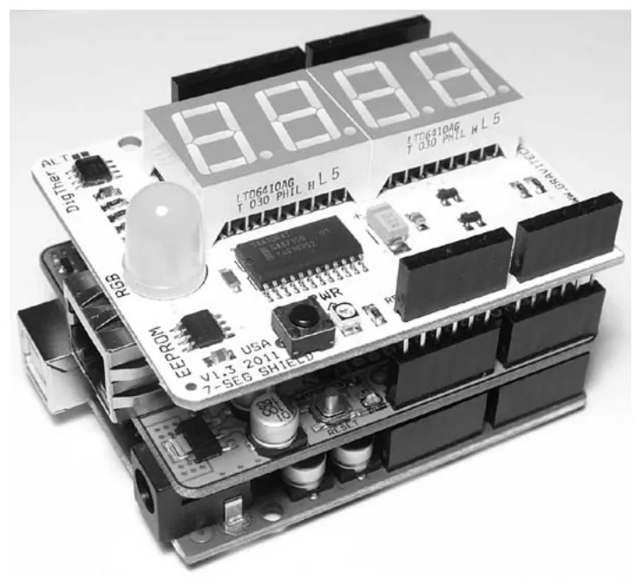

What exactly is Arduino? According to the Arduino website (http://www. arduino.cc/), it is
an open-source electronics prototyping platform based on flexible, easy-to-use hardware and software. It’s intended for artists, designers, hobbyists, and anyone interested in creating inter active objects or environments.
In simple terms, the Arduino is a tiny computer system that can be programmed with your instructions to interact with various forms of input and output. The current Arduino board model, the Uno, is quite small in size compared to the average human hand, as you can see in Figure 2-1.

Although it might not look like much to the new observer, the Arduino system allows you to create devices that can interact with the world around you. By using an almost unlimited range of input and output devices, sensors, indicators, displays, motors, and more, you can program the exact interactions required to create a functional device. For example, artists have created installations with patterns of blinking lights that respond to the movements of passers-by, high school students have built autonomous robots that can detect an open flame and extinguish it, and geographers have designed systems that monitor temperature and humidity and transmit this data back to their offices via text message. In fact, you’ll find an almost infinite number of examples with a quick search on the Internet.
Now let’s move on and explore our Arduino Uno hardware (in other words, the “physical part”) in more detail and see what we have. Don’t worry too much about understanding what you see here, because all these things will be discussed in greater detail in later chapters.
Let’s take a quick tour of the Uno. Starting at the left side of the board, you’ll see two connectors, as shown in Figure 2-2.

On the far left is the Universal Serial Bus (USB) connector. This connects the board to your computer for three reasons: to supply power to the board, to upload your instructions to the Arduino, and to send data to and receive it from a computer. On the right is the power connector. Through this connector, you can power the Arduino with a standard mains power adapter.
At the lower middle is the heart of the board: the microcontroller, as shown in Figure 2-3.

The microcontroller is the “brains” of the Arduino. It is a tiny computer that contains a processor to execute instructions, includes various types of memory to hold data and instructions from our sketches, and provides various avenues of sending and receiving data. Just below the microcontroller are two rows of small sockets, as shown in Figure 2-4.

The first row offers power connections and the ability to use an external RESET button. The second row offers six analog inputs that are used to measure electrical signals that vary in voltage. Furthermore, pins A4 and A5 can also be used for sending data to and receiving it from other devices. Along the top of the board are two more rows of sockets, as shown in Figure 2-5.

Sockets (or pins) numbered 0 to 13 are digital input/output (I/O) pins. They can either detect whether or not an electrical signal is present or generate a signal on command. Pins 0 and 1 are also known as the serial port, which is used to send and receive data to other devices, such as a computer via the USB connector circuitry. The pins labeled with a tilde (~) can also generate a varying electrical signal, which can be useful for such things as creating lighting effects or controlling electric motors.
Next are some very useful devices called light-emitting diodes (LEDs); these very tiny devices light up when a current passes through them. The Arduino board has four LEDs: one on the far right labeled ON, which indicates when the board has power, and three in another group, as shown in Figure 2-6.
The LEDs labeled TX and RX light up when data is being transmitted or received between the Arduino and attached devices via the serial port and USB. The L LED is for your own use (it is connected to the digital I/O pin number 13). The little black square part to the left of the LEDs is a tiny microcontroller that controls the USB interface that allows your Arduino to send data to and receive it from a computer, but you don’t generally have to concern yourself with it.

And, finally, the RESET button is shown in Figure 2-7.

As with a normal computer, sometimes things can go wrong with the Arduino, and when all else fails, you might need to reset the system and restart your Arduino. This simple RESET button on the board (Figure 2-7) is used to restart the system to resolve these problems.
One of the great advantages of the Arduino system is its ease of expandability—that is, it’s easy to add more hardware functions. The two rows of sockets along each side of the Arduino allow the connection of a shield, another circuit board with pins that allow it to plug into the Arduino. For example, the shield shown in Figure 2-8 contains an Ethernet interface that allows the Arduino to communicate over networks and the Internet, with plenty of space for custom circuitry.
Notice how the Ethernet shield also has rows of sockets. These enable you to insert one or more shields on top. For example, Figure 2-9 shows that another shield with a large numeric display, temperature sensor, extra data storage space, and a large LED has been inserted.
Note that you do need to remember which shield uses which individual inputs and outputs to ensure that “clashes” do not occur. You can also purchase completely blank shields that allow you to add your own circuitry. This will be explained further in Chapter 8.


The companion to the Arduino hardware is the software, a collection of instructions that tell the hardware what to do and how to do it. Two types of software can be used: The first is the integrated development environment (IDE), which is discussed in this chapter, and the second is the Arduino sketch you create yourself.
The IDE software is installed on your personal computer and is used to compose and send sketches to the Arduino board.